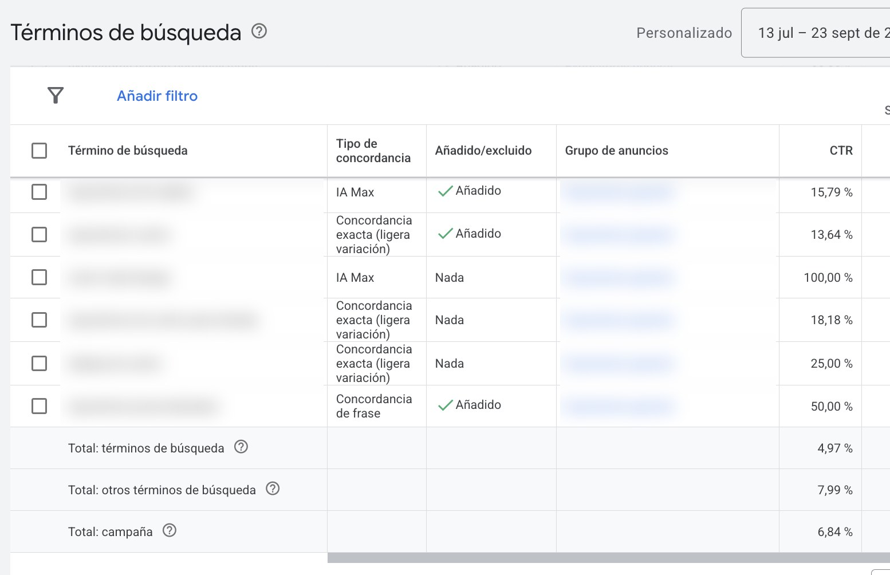

Qué es: un conjunto de funciones de IA que se activa dentro de tus campañas de búsqueda.
Lo bueno: encuentra búsquedas relevantes que no tenías como palabra clave.
El riesgo: si no lo vigilas, también trae búsquedas que no tienen nada que ver con tu negocio.
Qué es AI Max
AI Max se activa a nivel de campaña de búsqueda y junta tres funciones. La coincidencia ampliada de términos usa tus palabras clave, tus anuncios y tu web para decidir en qué búsquedas aparecer. La personalización del texto genera títulos y descripciones a partir de tu web y tus anuncios. Y la expansión de la URL final lleva al usuario a la página de tu web que Google considera más relevante para esa búsqueda.
No es un tipo de campaña nuevo. Tu estructura de palabras clave sigue ahí, pero deja de ser el único límite de lo que puede activar tus anuncios.
Cómo se ve en el informe de términos de búsqueda
La forma más rápida de saber qué está haciendo AI Max es el informe de términos de búsqueda. En la columna Tipo de concordancia aparece "IA Max" en las búsquedas que ha traído esta función.

En esta captura se ven las dos caras. La primera búsqueda de IA Max describía uno de los productos del cliente con otras palabras, tenía un CTR del 15,79 % y encajaba con el negocio, así que la añadí como palabra clave. La segunda, en cambio, era una búsqueda en inglés sin relación con lo que vende el cliente. Con tan pocas impresiones, un CTR del 100 % no significa nada: esa búsqueda fue directa a negativas.
Mi rutina con AI Max activo es revisar este informe cada semana durante el primer mes y después cada quince días.
Los controles que aplico
Palabras clave negativas. Siguen funcionando con AI Max. Mantengo una lista a nivel de cuenta con términos que nunca quiero (empleo, gratis, cursos, DIY) y otra por campaña.
Marcas. Uso las inclusiones y exclusiones de marca para evitar pujar por búsquedas de la competencia si el cliente no quiere, o para limitar una campaña de marca a su propia marca.
Exclusiones de URL. Si la expansión de URL está activa, excluyo páginas que no deberían recibir tráfico de pago: blog, empleo, aviso legal o páginas de producto sin stock.
Personalización del texto. En sectores regulados o marcas con un tono muy definido, la desactivo o reviso cada recurso generado antes de dejarlo activo.
Cómo probarlo sin arriesgar
Google permite activar AI Max como experimento, dividiendo el tráfico entre la campaña original y la versión con AI Max. Es la forma que recomiendo: dejas correr la prueba entre cuatro y seis semanas y comparas coste por conversión, volumen y calidad de lead.
Antes de lanzarlo, la medición tiene que estar bien. Si las conversiones que recibe Google no son fiables, AI Max va a aprender a buscar más de lo que no te interesa.
Cuándo no lo activaría
En cuentas sin un historial mínimo de conversiones, con presupuestos muy ajustados donde cada clic cuenta, o en negocios con restricciones legales sobre lo que pueden decir sus anuncios. En esos casos prefiero empezar por ordenar la estructura y la medición.
Preguntas frecuentes
¿AI Max sustituye a la concordancia amplia?
Va un paso más allá. Además de tus palabras clave, usa el contenido de tus anuncios y de tu web para decidir en qué búsquedas aparecer.
¿Siguen funcionando las palabras clave negativas?
Sí. Las negativas se aplican también a las búsquedas que trae AI Max, por eso conviene tenerlas al día.
¿Puedo desactivar solo una parte?
Sí. La personalización del texto y la expansión de la URL final se pueden desactivar por separado.